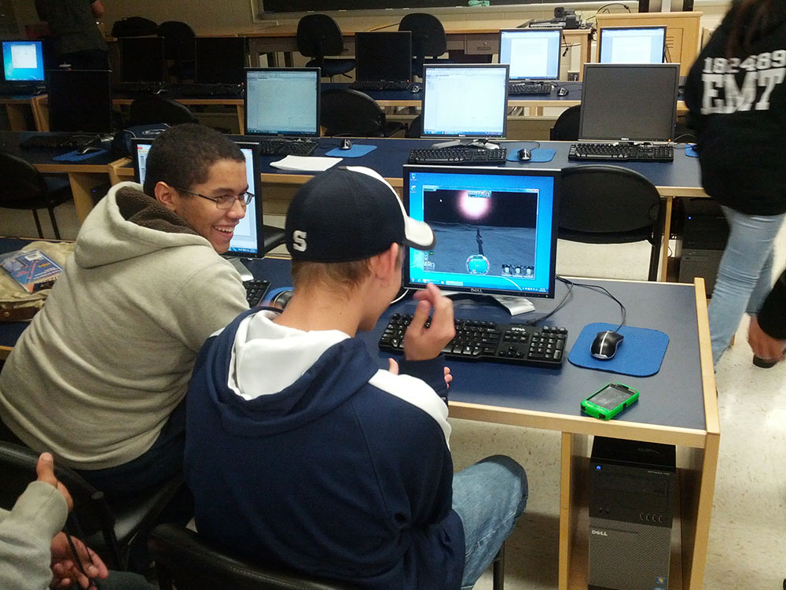

Research Areas
Solar Energy
-
Analyzing Effects of Solar Variability and System Location on LMP Prices
Mesude Bayrakci-Boz and Joseph Ranalli
presented at the 49th IEEE PV Specialists Conference, Philadelphia, PA, June 6-10, 2022.
[PDF] [DOI-In Press] -
Correlations In Spatial Variability When Accounting For Cloud Advection
Joseph Ranalli
presented at the 49th IEEE PV Specialists Conference, Philadelphia, PA, June 6-10, 2022.
[PDF] [DOI-In Press] -
Downscaling of Spatial Irradiance Based on Cloud Advection using Transfer Functions
Joseph Ranalli and Esther E.M. Peerlings
presented at the 48th IEEE PV Specialists Conference, 2021
[PDF] [DOI] -
Cloud Advection Model of Solar Irradiance Smoothing by Spatial Aggregation
Joseph Ranalli and Esther Peerlings
Journal of Renewable and Sustainable Energy, vol. 13, no. 3, p. 033704, 2021
[PDF] [DOI] -
Cloud Advection and Spatial Variability of Solar Irradiance
Joseph Ranalli, Esther Peerlings and Thomas Schmidt
presented at the 47th IEEE PV Specialists Conference, 2020
[PDF] [Poster] [DOI] -
Predicting PV Areas in Aerial Images with Deep Learning
Matthias Zech and Joseph Ranalli
presented at the 47th IEEE PV Specialists Conference, 2020
[PDF] [Poster] [DOI] -
Configurations of renewable power generation in cities using open source approaches:
with Philadelphia case study
Joseph Ranalli and Alaa Alhamwi
Applied Energy, vol. 269, Jul. 2020
[PDF] [DOI] -
Effect of a part-hour shading methodology on the sensitivity of shading calculations to horizon uncertainty
Joseph Ranalli and David J. Starling
Solar Energy, vol. 170, pp. 217-220, Aug. 2018
[PDF] [DOI] -
Toward comprehensive solar energy mapping systems for urban electricity system planning and development
Joseph Ranalli, Kirby Calvert, Mesude Bayrakci Boz, and Jeffrey R.S. Brownson
The Electricity Journal, vol. 31, no. 1, pp. 8-15, Jan. 2018
[PDF] [DOI] -
Comparison of Accuracy in Several Site Survey Methods
Joseph Ranalli and Robert Vitagliano
presented at the ASES National Solar Conference, 2017 -
Sensitivity of shading calculations to horizon uncertainty
Joseph Ranalli, Robert Vitagliano, Mauro Notaro, and David J. Starling
Solar Energy, vol. 144, pp. 399-410, Mar. 2017
[PDF] [DOI] -
Assessing demand impact of solar capacity growth in Philadelphia
Joseph Ranalli, Mesude Bayrakci Boz, Kirby Calvert, and Jeffrey R.S. Brownson
presented at the ASES National Solar Conference, San Francisco, CA, p. 7, 2016
[PDF] [DOI] -
Trends in urban solar energy mapping and geospatial analysis: a state-of-art case study in Philadelphia, PA
Kirby Calvert, Joseph Ranalli, Franklin Hardisty, Mesude Bayrakci Boz, Carolyn Fish, Yale Williams, Michelle Matheson, and Jeffrey Brownson
presented at the Urban and Regional Information Systems Association "GIS-Pro 2015," Spokane, WA, 2015 -
Solar Survey: Development and validation of a smartphone-based solar site assessment tool
Joseph A. Ranalli
Solar Energy, vol. 122, no. 12, pp. 1199-1213, 2015
[PDF] [DOI] -
Solar Charging Station for Electric Vehicles
Angelo DeLuca, Joseph Ranalli, and David Starling
presented at the ASES National Solar Conference, State College, PA, 2015 -
Application Development Using the SAM Simulation Core
Joseph Ranalli, Franklin Hardisty, Kirby Calvert, and Jeffrey Brownson
presented at the ASES National Solar Conference, State College, PA, 2015 -
Panel - Mapping solar energy futures: Emerging trends in geospatial decision-support for stakeholders
Kirby Calvert, David Renne, Joseph Ranalli, David Lingfors, Carolyn Fish, and Jeffrey Brownson
presented at the ASES National Solar Conference, State College, PA, 2015 -
Lessons Learned from SAM Simulation Core Application Development
Joseph Ranalli
presented at the System Advisor Model Virtual Conference, 2015 -
Bringing solar site analysis to smartphones
Joseph Ranalli, Matthew Caccese, and Jesse Fox
in 43rd ASES National Solar Conference, San Francisco, CA, pp. 138-144, 2014
[PDF] -
Sensitivity of Shading Calculations to Horizon Measurement Accuracy
Joseph Ranalli and Jeffrey R.S. Brownson
in 43rd ASES National Solar Conference, San Francisco, CA, pp. 444-448, 2014
[PDF] -
Testing a method for de-energizing solar panels for firefighting
David Starling, Joseph Ranalli, Kenneth Dudeck, and Ron Steber
in 43rd ASES National Solar Conference, San Francisco, CA, pp. 278-282, 2014
[PDF]

Engineering Pedagogy
-
A Model for Development of Employer Engagement at a Small Campus
Joseph Ranalli and Susan Chappell
presented at the 2017 ASEE Annual Conference & Exposition, Columbus, OH, p. 11, 2017
[PDF] [DOI] -
Problem-based Learning Module for Teaching Thermodynamic Cycle Analysis using PYroMat
Christopher Reed Martin, Joseph Ranalli, and Jacob Preston Moore
presented at the 2017 ASEE Annual Conference & Exposition, Columbus, OH, p. 13, 2017
[DOI] -
Targeted flipped classroom technique applied to a challenging topic
J. Ranalli and J. Moore
in 2016 IEEE Frontiers in Education Conference (FIE), Erie, PA, p. 4, 2016
[PDF] [DOI] -
Teaching the foundations of thermodynamics with PYro
C. R. Martin, J. P. Moore, and J. A. Ranalli
in 2016 IEEE Frontiers in Education Conference (FIE), pp. 1-6, 2016
[DOI] -
3D Printing Opto-Mechanics
David Starling, Mari Magabo, Joseph Ranalli, and Kenneth Dudeck
presented at the AAPT 2016 Winter Meeting, New Orleans, LA, 2016 -
An Actively Quenched Single Photon Detector with a Light Emitting Diode
David J. Starling, Blake Burger, Edward Miller, Joseph Zolnowski, and Joseph Ranalli
Modern Applied Science, vol. 10, no. 1, pp. 114-120, Dec. 2015
[PDF] [DOI] -
A Mastery Learning Approach to Engineering Homework Assignments
Jacob Moore and Joseph Ranalli
presented at the 122nd ASEE Annual Conference, Seattle, WA, 2015
[PDF] [DOI] -
New Faculty Experiences with Mastery Grading
Joseph Ranalli and Jacob Preston Moore
presented at the 122nd ASEE Annual Conference, Seattle, WA, pp. 26.1187.1-26.1187.11, 2015
[PDF] [DOI] -
ABET Accreditation Model for a Multi-Option General Engineering Program at Multiple Locations
Kenneth Dudeck and Joseph Ranalli
presented at the Mid-Atlantic ASEE Conference, Philadelphia, PA, 2015 -
Sage-ly solar: Online math tools to teach solar energy
Joseph Ranalli and Jeffrey R. S. Brownson
in 42nd ASES National Solar Conference, Baltimore, MD, pp. 529-533, 2013
[PDF] -
Assessing the impact of video game based design projects in a first year engineering design course
J. Ranalli and J. Ritzko
in 2013 IEEE Frontiers in Education Conference (FIE), Oklahoma City, OK, pp. 530-534, 2013
[PDF] [DOI]

Combustion
-
Spatially Resolved Raman Spectra of Diffusion Flame via Compressive Sensing
David J. Starling and Joseph Ranalli
in Conference on Lasers and Electro-Optics, p. ATu4I.3, 2018
[DOI] -
Compressive sensing for spatial and spectral flame diagnostics
David J. Starling and Joseph Ranalli
Scientific Reports, vol. 8, no. 1, p. 2556, Feb. 2018
[PDF] [DOI] -
Characterization of a Nitrogen Diluted Hydrogen Diffusion Flame for Model Validation
Joseph A. Ranalli and Peter A. Strakey
Combustion Science and Technology, vol. 187, no. 9, pp. 1351-1375, Sep. 2015
[PDF] [DOI] -
Field testing the Raman gas composition sensor for gas turbine operation
Michael P. Buric, Benjamin T. Chorpening, Jessica C. Mullen, Joseph A. Ranalli, and Steven D. Woodruff
in Fiber Optic Sensors and Applications IX, Baltimore, MD, vol. 8370, p. 837009, 2012
[DOI] -
Simple Analysis of Flame Dynamics via Flexible Convected Disturbance Models
Joseph A. Ranalli, Donald Ferguson, and Christopher Martin
Journal of Propulsion and Power, vol. 28, no. 6, pp. 1268-1276, Nov. 2012
[PDF] [DOI] -
Field tests of the Raman gas composition sensor
M. P. Buric, B. T. Chorpening, J. C. Mullen, S. D. Woodruff, and J. A. Ranalli
in 2012 Future of Instrumentation International Workshop (FIIW) Proceedings, Gatlinburg, TN, pp. 1-4, 2012
[DOI] -
Measurement of Flame Frequency Response Functions Under Exhaust Gas Recirculation Conditions
Joseph Ranalli and Don Ferguson
J. Eng. Gas Turbines Power, vol. 134, no. 9, pp. 091502-091502-10, Jul. 2012
[PDF] [DOI] -
Utilization of Exhaust Gas Recirculation for Control of Dynamic Combustion Instabilities
Donald Ferguson and Joseph Ranalli
presented at the 7th US National Technical Meeting of the Combustion Institute, Atlanta, GA, 2011 -
An equivalent flexible framework for linearized flame sheet model dynamics
Joseph Ranalli, Donald Ferguson, and Christopher Martin
presented at the 7th US National Technical Meeting of the Combustion Institute, Atlanta, GA, 2011 -
Measurements of ensemble averaged flame dynamics using spatially resolved analysis
J. A. Ranalli, C. R. Martin, and U. Vandsburger
Experimental Thermal and Fluid Science, vol. 35, no. 7, pp. 1409-1417, Oct. 2011
[PDF] [DOI] -
Use of exhaust gas recirculation as a control approach for thermoacoustic instabilities
J. Ranalli and D. Ferguson
in Fall Technical Meeting of the Eastern States Section of the Combustion Institute, pp. 659-664, 2011 -
Characterization of Instabilities in a Low-Swirl Injector with Exhaust Gas Recirculation
Donald Ferguson and Joseph Ranalli
in 49th AIAA Aerospace Sciences Meeting, Orlando, FL, vol. AIAA-2011-517, 2011 -
Spontaneous Raman Scattering Measurements and CFD Simulations of Major Species and Temperature in a Turbulent Dilute Hydrogen Diffusion Flame
Joseph Ranalli and Peter Strakey
in 49th AIAA Aerospace Sciences Meeting, Orlando, FL, vol. AIAA-2011-239, 2011
[PDF] [DOI] -
Measurement of Flame Frequency Response Functions in a Low-Swirl Flame under Exhaust Gas Recirculation Conditions
Joseph Ranalli and Donald Ferguson
in 49th AIAA Aerospace Sciences Meeting, Orlando, FL, vol. AIAA-2011-518, 2011
[PDF] [DOI] -
Characterization of Instabilities in a Low-Swirl Injector with Exhaust Gas Recirculation
Donald Ferguson and Joseph Ranalli
in 49th AIAA Aerospace Sciences Meeting, Orlando, FL, vol. AIAA-2011-517, 2011
[PDF] [DOI] -
Convective wave motion during combustion instability in a low-swirl burner flame
J. A. Ranalli and D. Ferguson
in Western States Section of the Combustion Institute Spring Technical Meeting, pp. 11-19, 2010 -
Influence of exhaust gas recirculation on combustion instabilities in CH4 and H2/CH4 fuel mixtures
Don Ferguson, Joseph Ranalli, and Peter Strakey
in Proceedings of the ASME Turbo Expo, Glasgow, UK, vol. GT2010-23642, 2010
[PDF] [DOI] -
Measurement of Flame Transfer Functions in Swirl-Stabilized, Lean-Premixed Combustion
JA Ranalli, CR Martin, PR Black, U Vandsburger, and R West
Journal of Propulsion and Power, vol. 25, no. 6, pp. 1350-1354, Dec. 2009
[PDF] [DOI] -
Analytical modeling of spatial phenomena dictating the frequency response of turbulent premixed flames
C. Martin, J. Ranalli, and U. Vandsburger
in Fall Meeting of the Eastern States Section of the Combustion Institute, pp. 23-30, 2009 -
A practical application of the bode criterion for prediction of thermoacoustic combustion instabilities
J. A. Ranalli, C. R. Martin, and U. Vandsburger
in Fall Meeting of the Eastern States Section of the Combustion Institute, pp. 1-8, 2009 -
Characteristic linear dynamics of kinetically controlled burning. Part I: Traditional single-reactor models
C. Martin, J. Ranalli, U. Vandsburger, and W. Baumann
Combustion Theory and Modelling, vol. 13, no. 6, p. 921, 2009
[PDF] [DOI] -
On use of OH* and CO2* chemiluminescence for heat release rate measurement in diluted flames
J. A. Ranalli, D. Ferguson, and J. Escobar
in Fall Meeting of the Eastern States Section of the Combustion Institute, pp. 497-503, 2009 -
Predicting dynamic heat release rate in turbulent flames with reduced-order models
Christopher Martin, Joeseph Ranalli, Paul Black, William Baumann, Uri Vandsburger, and Robert West
in Fall Technical Meeting of the Eastern States Section of the Combustion Institute, pp. 382-395, 2007

Collaborators
-
Frey Brownson
Heliotactic
website -
Jacob Moore
Penn State Mont Alto
website -
Chris Martin
Penn State Altoona
website -
David Starling
Penn State Hazleton
website -
Kirby Calvert
University of Guelph
website -
Mesude Bayrakci-Boz
Penn State Hazleton
website